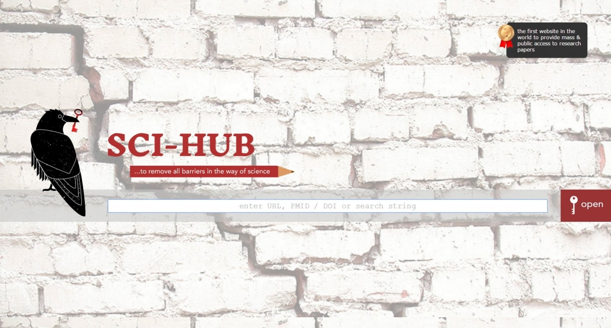

Being involved in science enables the development of critical thinking skills, which ultimately helps you view the world through a different lens. The most powerful way to achieve this perspective is by questioning one step further using a simple word – “why?”
For example, one question that has always puzzled me has been the commercialisation of water – Why do people pay for bottle water? Given that Australia’s water treatment process is of a high standard, I find it difficult to justify the cost of a resource that is readily available via tap. Perhaps there has been a generational effect, where the water quality in previous decades has not been to the standard seen currently, resulting in public skepticism. Alternatively, the behaviours we see today could be the result of incredibly smart marketing strategies, which have created the perception that water is better from a bottle and that consumers are paying the price for the quality of the water, instead of the more likely reason of packaging costs (Note: There may be other reasons here that I am overlooking. If you pay for bottled water, I’d be interested in hearing about your reasoning for doing so).
The reason for this slight tangent is because over the past few months I have been conducting a systematic review for my PhD, which has resulted in me reading close to 600 papers. During this process, I have had to retrieve a large number of articles from online journals, much of which was obtained through the universities’ proxy due to a paywall. You see, certain journals require a fee to view their articles, so instead of academics paying for this, universities spend a large amount of money to cover the access fees. If your university doesn’t have the article you are looking for, there are usually request forms for interlibrary loans that can be filled out which enable the librarians at the university to source the required article for you. Therefore, any staff or student associated with a university can reap the benefits of this service. This is all well and good for people associated with a university, but what about the public? The academic paywall appears to disadvantage eager learners who want to access journal papers but may not necessarily be attached to a university institution.
As a result, lately I have found myself questioning, “why is this paywall even here in the first place?”
Researchers do not get paid by the journals to publish their articles. In fact, some researchers will be required to pay the journal to get their article considered and reviewed. The next logical assumption is that the journal pays the reviewers, however, this is not the case either. Reviewers are generally experts in the field and engage in the reviewing process for a number of reasons, some of which include a feeling of responsibility to give back to the scientific community, or in fact a deep interest in reading emerging research. Even editing positions within a journal are not all paid roles.
So where does the money go?
When reading the submission guidelines on journal websites, the general/vague reason provided is that the fee covers the cost of processing the article. Some journals even provide authors with a choice of paying the journals to ensure that their article is freely available, or submitting under an alternative model whereby the author does not pay the journal and these fees are passed on to people who are interested in the research, via a pay wall. Since we live in the digital age of science, most papers are published online, so I am currently scratching my head at what the current publishing costs involve, or whether the costs are justified at the current prices.
What can be done?
There has been a push for authors to publish in open access journals, which has been moderately successful. However, for better or worse we live in a scientific community where metrics matter (such as impact factors) and not all high impact journals are open access, which could be a deterrent for some scientists.
There has also been a response to the publishing paywall, which has been through the creation of Sci-Hub by Alexandra Elbakyan. As a neuroscientist and computer programmer, Alexandra was frustrated with the lack of open access to scientific information. As a result, Sci-Hub is a website, which bypasses publisher paywalls by allowing access through educational institution proxies. The legality of the service is questionable with publishers engaging in countless lawsuits against the site and Alexandra herself.
What does the future of science look like?
The future does look positive for the scientific community. With international targets such as Open Access by 2020, there is increasing recognition for the urgent need to disseminate all scientific findings to everyone and for journals to be accountable and transparently declare the costs behind their dissemination. Overall, hopefully this push for open access will encourage all citizens to become lifelong learners and furthermore, enable scientists to push the envelope further for society and make a larger positive impact.